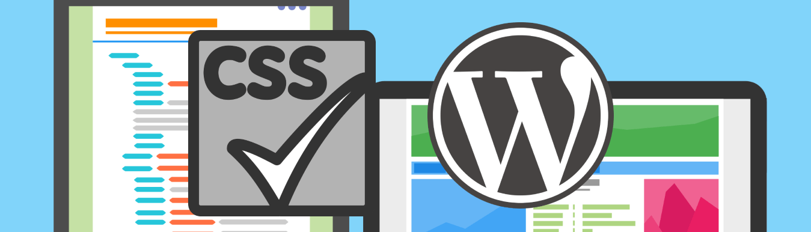
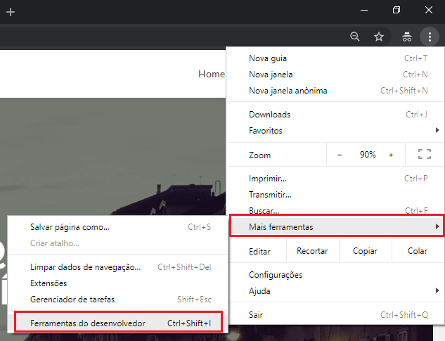
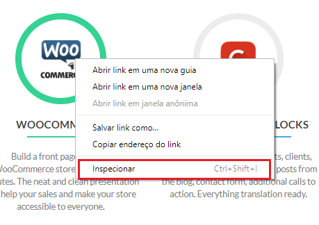
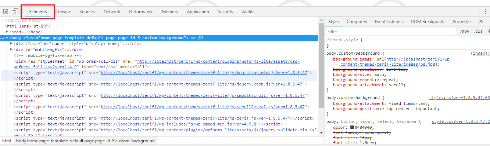

CSS para customizar WordPress
Você sabia que existe a possibilidade de fazer uma customização no estilo de alguns temas do WordPress sem a necessidade de alterar o código do tema em si. Neste post mostramos como fazer pequenas alterações no CSS do site.
Usando CSS para customizar temas do WordPress

Uma das grandes vantagens do WordPress é a variedade de temas gratuitos disponíveis. Por isso, no curso WordPress Prático acabei optando por usar 4 temas existentes para ensinar sobre a plataforma. No entanto, alguns alunos acabam tendo dúvida sobre como customizar detalhes como cores e tamanho de fonte, entre outras. Neste post vou mostrar como usar CSS para customizar WordPress, identificando classes e customizando o tema.
Usando ferramentas do Chrome
Primeiramente é necessário identificar as classes CSS que devem ser alteradas. Por isso, é preciso ter um bom conhecimento sobre a linguagem de estilo e ter ferramentas que identifiquem esses detalhes em temas existentes. Para este último ponto vamos usar a opção “Ferramentas do desenvolvedor” do navegador Chrome. Existem 4 formas de acesso:
-
No menu do Chrome abrir a opção “Mais ferramentas” -> “Ferramentas do desenvolvedor” (veja imagem abaixo).

-
Usar no teclado as opções Ctrl + Shift + I
-
Usar no teclado a opção F12.
-
Clique na página com o botão direito do mouse, sobre o elemento que você quer avaliar (uma imagem, por exemplo), e escolha a opção “Inspecionar”.

Depois que acessar a ferramenta, para que possa avaliar a estrutura HTML do tema e os estilos do CSS envolvidos, basta selecionar a aba Elements.

Usando o CSS
Depois de identificada a classe CSS que deve ser alterada, você deve fazer a mudança em si. Existem 2 formas principais de fazer isso. Usar a opção “Aparência” -> “Editor”, escolher um dos arquivos CSS do tema relacionados com a mudança e fazer a alteração aí. O problema desta opção é que quando for fazer a atualização do tema você corre o risco de perder a mudança.
A segunda opção é acessar “Aparência” -> “Personalizar”. A grande maioria dos temas oferece a opção “CSS adicional”. Com esta opção você pode incluir alterações no CSS e não vai correr o risco de perder em futuras atualizações.
No vídeo abaixo mostramos um exemplo prático de como identificar uma classe e como alterar a mesma usando as ferramentas e opções exibidas aqui.